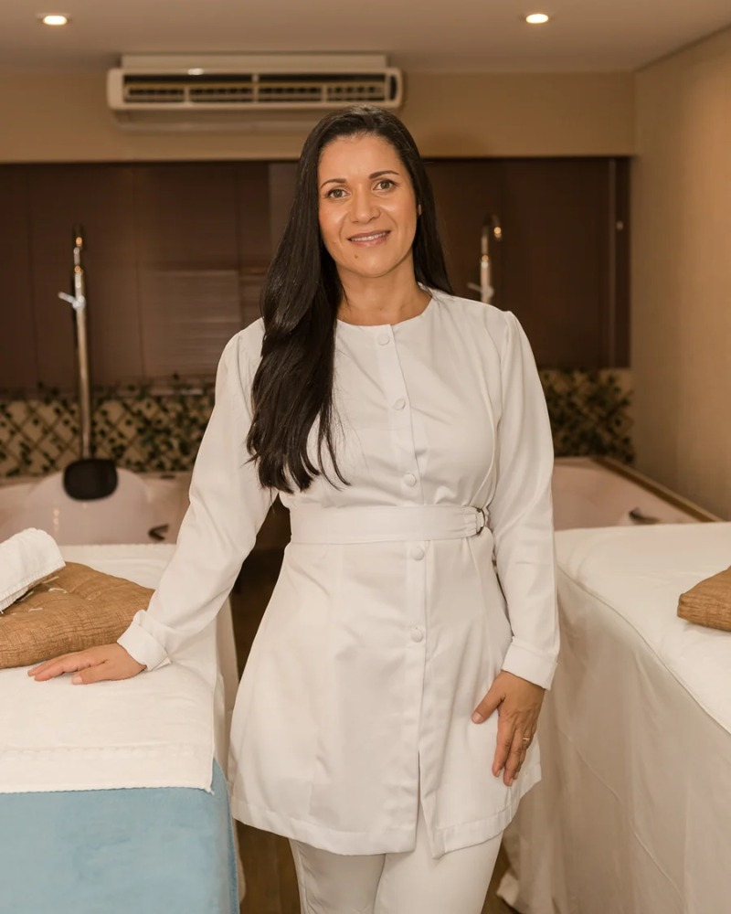
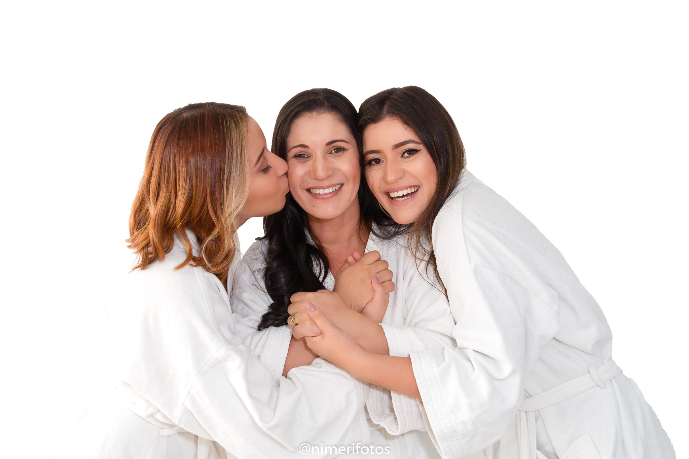
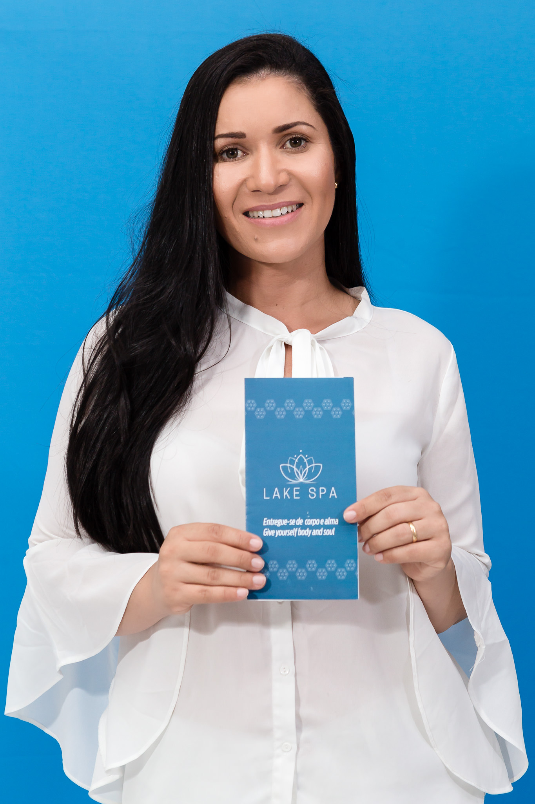

Palestras
Encontros para compartilhar ideias, experiências e reflexões que ampliam perspectivas e inspiram novas possibilidades.
Tenho interesseUma história guiada pela fé, pelo propósito e pelo desejo de transformar vidas.

Grasiela Dias é uma mulher que decidiu transformar a própria vida em propósito. Sua história nasceu do desejo de cuidar, servir e transformar vidas, e foi assim que surgiu o Lake Spa: um sonho que cresceu com ela e se tornou uma missão.
Ao longo dessa caminhada, Grasiela entendeu que cuidar vai muito além do corpo. É enxergar o ser humano por inteiro, suas emoções, sonhos, dores e essência.
Dessa visão nasceu o Método Massoterapia 5 Estrelas, criado para formar profissionais e despertar mulheres empreendedoras, preparadas não apenas para atuar no mercado, mas para construir empresas com alma, humanidade e propósito.
Para Grasiela, prosperidade não se resume ao dinheiro. Existe também uma riqueza emocional, humana e espiritual que precisa ser cultivada.
Cristã, ela entende que sua fé não pode ser separada de quem é ou daquilo que constrói. Por isso, o Lake Spa assume sua essência cristã não como imposição, mas como expressão de uma vida firmada em Cristo.
Seu desejo é que cada pessoa que chegue ao Lake Spa encontre cuidado, acolhimento, paz, amor e esperança.
Mais do que uma empresa, Grasiela enxerga o Lake Spa como um instrumento de serviço e construção de legado, onde fé, excelência, humanidade e prosperidade caminham juntas.
Porque, para ela, negócios podem transformar pessoas e pessoas transformadas podem transformar o mundo.
O Lake Spa é apenas uma parte de algo muito maior: um propósito de servir a Deus através do cuidado com vidas.


FORMAÇÃO E COMPARTILHAMENTO
Experiências de aprendizado para quem deseja ampliar conhecimentos, desenvolver habilidades e transformar sua atuação.
Encontros para compartilhar ideias, experiências e reflexões que ampliam perspectivas e inspiram novas possibilidades.
Tenho interesseFormações voltadas ao desenvolvimento de habilidades e ao aprofundamento de conhecimentos para uma atuação profissional mais segura e consciente.
Tenho interesseVivências intensivas de aprendizado e troca, com espaço para aprofundar conhecimentos, fortalecer a prática e impulsionar novos caminhos.
Tenho interesseEXPERIÊNCIAS REAIS
Cada cuidado deixa uma marca. Conheça as experiências de quem já viveu esse momento com a Grasi.

“Insira aqui o depoimento real da primeira cliente.”

“Insira aqui o depoimento real da segunda cliente.”

“Insira aqui o depoimento real da terceira cliente.”